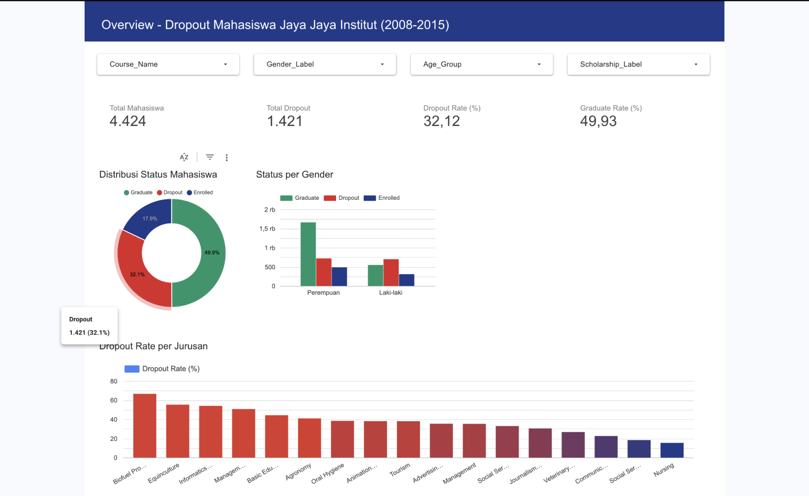
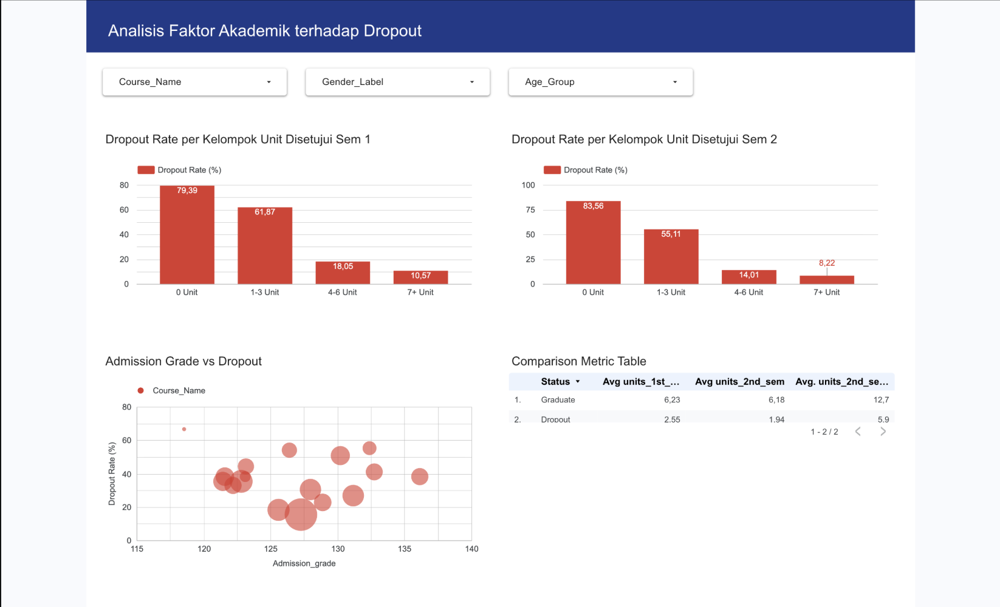
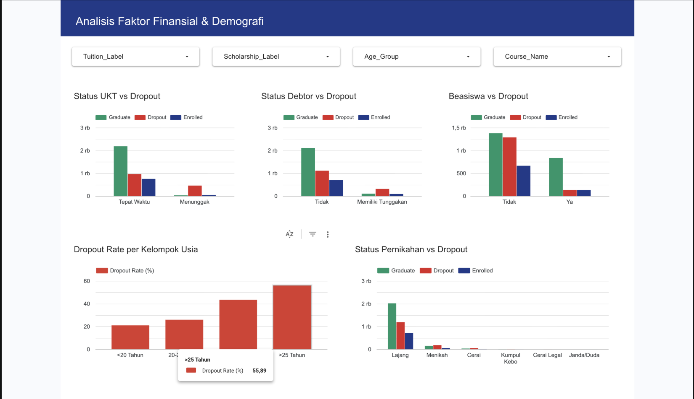
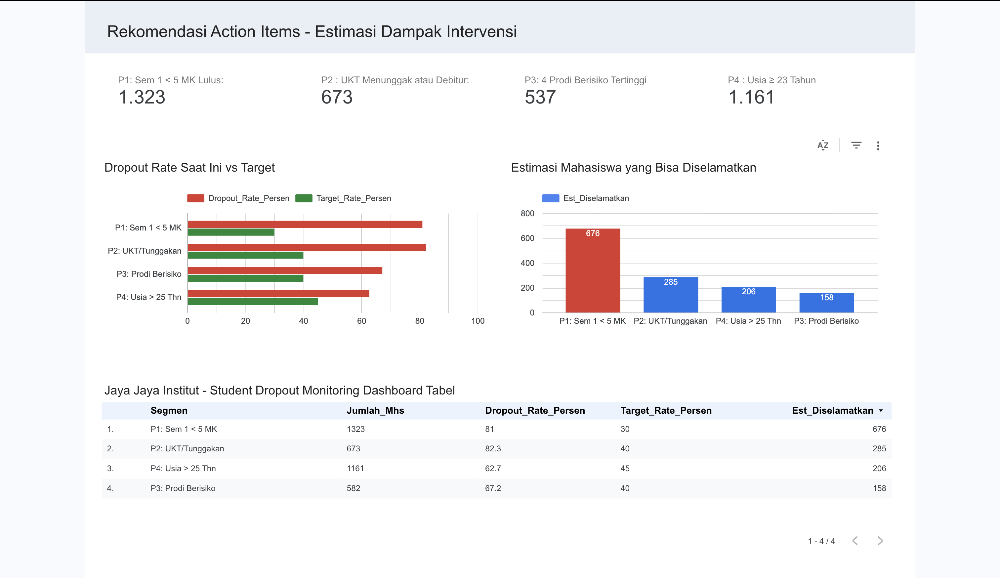

Section 02 · Applied Data Science
IDCamp Expert · Education Analytics · ML Classification
Student Dropout
Prediction
Jaya Jaya Institut had a 32% dropout rate — 1 in 3 students never finishing their degree. I built a machine learning system using XGBoost to identify at-risk students early, achieving 92.42% accuracy and AUC 97.27%, with a Looker Studio dashboard and Streamlit app for actionable intervention.
Model XGBoost · Random Forest
Stack scikit-learn · SMOTE · Streamlit · Looker Studio
Dataset 4,424 students · 37 features · 2008–2015
Level IDCamp Expert
01 — Problem
1 in 3 students drops out. The institution has no early warning.
Jaya Jaya Institut has operated since 2000 with over 1,000 enrolled students. By 2015, 32.12% of their students — 1,421 out of 4,424 — had dropped out before graduating. No system existed to flag at-risk students early enough for intervention.
Late intervention is expensive and ineffective. A student who reaches their 4th semester with consistent academic struggles has already established patterns that are hard to break. The business problem: build a system that identifies dropout risk in the first two semesters, while there's still time to act.
The dataset contains 37 features across three domains:
- Academic signals — Curricular units enrolled, approved, and evaluated per semester (1st and 2nd). Grade averages. These are the strongest predictors.
- Financial signals — Tuition fee payment status, debtor status, scholarship holder status. A student behind on fees is at dramatically elevated risk.
- Demographic context — Age at enrollment, gender, marital status, program (course), nationality. These provide context for interpretation.
XGBoost
SMOTE
Classification
Education Analytics
Looker Studio
Streamlit
02 — Modeling Approach
Pipeline design: from imbalanced data to production-ready model
Three technical challenges had to be solved before any model could be evaluated: class imbalance, feature encoding, and model selection.
Class Imbalance — SMOTE
The "Enrolled" class (students still in progress) created a 3-class problem, but the real classification goal was binary: Graduate vs Dropout. After removing "Enrolled" students, the dataset was still imbalanced (~60% Graduate, ~40% Dropout). SMOTE was applied to the training set only — never the test set — to avoid data leakage.
Feature Engineering
Categorical features were encoded differently based on their structure: ordinal variables (like enrollment mode) used ordinal encoding; nominal variables (marital status, nationality) used one-hot encoding. Binary variables (gender, debtor status, scholarship) were mapped directly to 0/1. No magic — just matching the encoding to the feature's actual structure.
Model Selection — GridSearchCV
Two candidate models were evaluated: Random Forest and XGBoost. Both were tuned via GridSearchCV with 4-fold inner cross-validation. Final evaluation used 5-fold Stratified K-Fold to handle class proportions correctly.
XGBoost was selected as the final model. Primary metric was F1-Score (balances precision and recall for imbalanced classes), secondary metric was Recall (missing a dropout is costlier than a false alarm).
Eval
5-fold StratifiedKFold
03 — Model Results
92.42% accuracy, AUC 97.27% — what do these numbers mean operationally?
| Metric |
Result |
Interpretation |
| Accuracy |
92.42% |
Of all predictions, 92.42% are correct |
| F1-Score (Dropout class) |
90.37% |
Balanced precision/recall on the class that matters |
| ROC-AUC |
97.27% |
Excellent discrimination between dropout and graduate |
| Precision (Dropout) |
High |
When model flags dropout, it's usually right |
| Recall (Dropout) |
High |
Model catches most actual dropouts |
Top 3 Feature Importance
Curricular Units 2nd Sem (Approved)28.6%
Tuition Fees Up To Date10.7%
Curricular Units 1st Sem (Enrolled)4.9%
The dominant signal is academic performance in semester 2 — specifically, how many courses a student actually passes. Students who pass 0–4 units in semester 1 show 74–88% dropout rates. Tuition payment status is the second-strongest signal globally — a student who is behind on fees is at dramatically elevated risk regardless of academic performance.
04 — Key Risk Insights
What the data reveals about who drops out and why
Financial risk
94%
Students with overdue tuition fees show a 94.0% dropout rate — the single most predictive individual factor.
Debtor status
75.5%
Students with outstanding debt to the institution show 75.5% dropout rate. Financial stress and academic failure co-occur.
Scholarship effect
13.8%
Scholarship holders show only 13.8% dropout rate vs 48.4% for non-holders. Financial support dramatically changes outcomes.
Academic threshold
0–4
Passing 0–4 units in semester 1 predicts 74–88% dropout. This is the clearest early-warning threshold for counselor intervention.
Graduation rate
49.93%
Less than half of enrolled students graduate. Combined with 32.12% dropout, the institution has room for significant improvement.
Age factor
>25
Students who enroll after age 25 show elevated dropout rates — likely due to competing work and family obligations.
"A student behind on tuition AND passing fewer than 4 courses in semester 1 has a dropout probability that the model flags above 90%. These students need intervention in week 8 of semester 1 — not after year 2."
06 — Dashboard Preview
4-page Looker Studio dashboard — from overview to intervention
Interactive Looker Studio dashboard for academic leadership and counselors, covering institutional dropout patterns, academic and financial risk factors, and prioritized intervention targets.

Overview · 4,424 students · 32.12% dropout rate · distribution by program and gender

Analisis Akademik · Units approved vs dropout rate · admission grade correlation

Finansial & Demografi · UKT status · scholarship effect · age group breakdown

Rekomendasi & Intervensi · 4 priority segments · estimated students saved per action
Learning Context
Expert level, final submission. Passed — with honest notes.
This project was the final submission for Belajar Penerapan Data Science, the IDCamp 2025 Expert level. It came after the Employee Attrition project (first submission), where I had already absorbed lessons about reproducibility, specific recommendations, and the cost of missed details. This was the second chance to apply all of that.
Beginner (4 courses)
Intermediate (Air Quality Dashboard)
Belajar Matematika untuk Data Science
Expert Submission 1 (Employee Attrition)
→ Expert Submission 2 (this project)
Reviewer feedback — passed, with honest notes.
Two areas of feedback: what worked well and what could be improved:
Reviewer — What Worked
"Kode yang kamu tulis sudah rapi, ringkas, dan terstruktur" (Your code is clean, concise, and well-structured). The UI prototype had a good look and feel. Documentation in the notebook was confirmed complete. The video walkthrough covered the ML solution, dashboard, and conclusion — all required points.
Reviewer — Visualization Issue
One specific issue flagged: using different colors to differentiate categories already labeled on the x-axis. When category labels are visible in axis text, color encoding the same dimension is redundant — it adds visual noise, not information. Color should only be applied when it carries data not already encoded elsewhere.
Reviewer — Suggestions for Next Iteration
The prediction app would be stronger with: a mass upload option (CSV/Excel for batch predictions, not just one student at a time), a student identifier column so counselors can refer back to specific records, and a user manual tab. The reviewer also suggested exploring bias checks — does the model predict dropout differently based on socioeconomic status?
Future Development
Based on reviewer feedback, here's what the next iteration of this tool will include:
Mass Upload (Batch Prediction)
Replace the one-student-at-a-time form with a CSV/Excel upload interface for batch predictions. A counselor managing 300 students can't manually enter each one — batch upload is what makes the tool usable at institutional scale.
Student Identifier Column
Add a Student ID field to the prediction output so counselors can map results back to their enrollment system. Without an identifier, the prediction data is hard to act on in practice.
User Manual Tab
Add a dedicated how-to-use tab in the Streamlit app explaining the input fields, how to interpret the risk score, and what actions to take for high-risk students. Makes the tool accessible to non-technical counselors.
Bias & Fairness Check
Run a fairness analysis: does the model predict dropout differently based on socioeconomic status, age, or gender? A model that achieves 92% accuracy overall can still be systematically wrong for specific subgroups — this check is non-optional for any ML system applied to human outcomes.